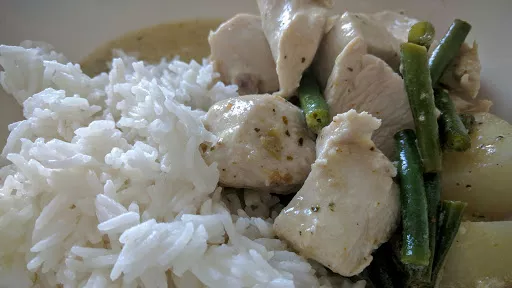

Stranger Foods
Thai green chicken curry

Servings:
8
Total:
40 mins
Ingredients
x0.5
x1
x2
x3
2
tbsp oil
2
cloves garlic, chopped
6
tsp Thai green curry paste
2
x 400 ml cans coconut milk
450
g new potatoes, scrubbed and cut into chunks
200
g pack trimmed green beans, halved
4
tsp Thai fish sauce, or to taste
2
tsp caster sugar
6
bonesless skinless chicken breasts, cut into bitesized chunks
3
wide strips lime zest
large handful
basil leaves
Instructions
Heat the
oil
2
tbsp
in a large wok, drop in the
garlic
2
cloves
and stir until just golden. Add the
curry paste
6
tsp
and stir for a couple of minutes, then pour in the
coconut milk
2
x 400 ml cans
and bring to the boil.
Add the
potatoes
450
g
and simmer for
10
minutes, then add the
beans
200
g
and simmer for
5
minutes more. Both the
potatoes
450
g
and
beans
200
g
should be just tender by now - if not, cook a little longer.
Stir in the
fish sauce
4
tsp
and
sugar
2
tsp
, then add the
chicken
6
. Cover and simmer for
10
minutes until tender.
Before serving, stir in the
lime zest
3
wide strips
, followed by the
basil
large handful
.
kcal
363
fat
21 g
saturates
15 g
carbs
15 g
sugar
1 g
fibre
1 g
protein
29 g
salt
1.09 g
BBC Good Food: One-pot Dishes
Short Link
Long Link